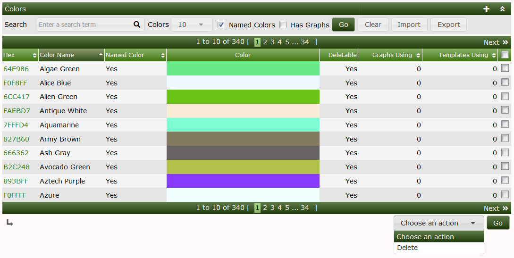
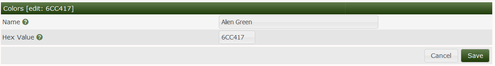
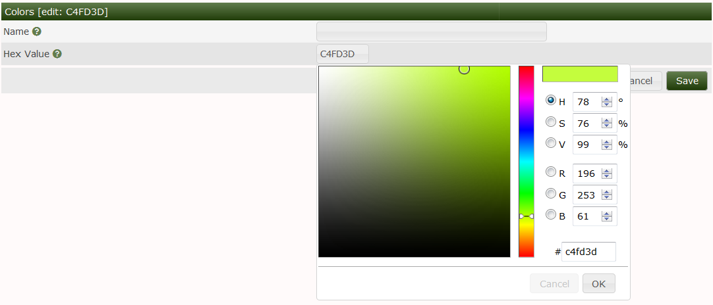

Colors in Cacti come in two types and used to maintain a list of colors that can be used in Cacti for Graph Templates and Graphs.
The first type are the legacy Cacti colors imported from earlier versions of Cacti. Starting with Cacti 1.0, Cacti started to support the concept of Named Colors which come from a well known dictionary of well defined colors. Named Colors are read only in Cacti. While the legacy Cacti colors can be named as the Cacti administrator desires.
The image below shows a list of Cacti Named Colors. You can see that there is a search bar and check boxes for showing just Named Colors or all colors, and another check box for showing Colors that are used in Graph Templates and Graphs. You can not remove either the Named Colors or Colors that are in use by either a Graph Template or Graph.

The image below is the Color edit screen. If the color is read only, you can open this page, but not change any of the details. For legacy Cacti colors, or for Colors added by the Cacti Administrator, you can change the name and the Color hex value.

Below, you can see the color picker that allows you to visually find the appealing color. You can also use hex values that were previously supported in earlier Cacti version.

Copyright (c) 2004-2024 The Cacti Group